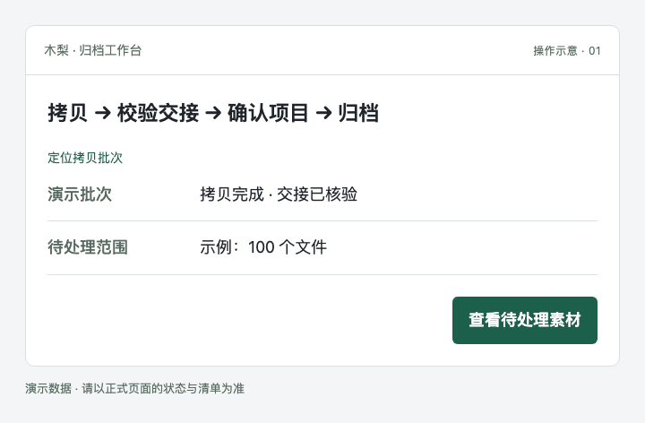
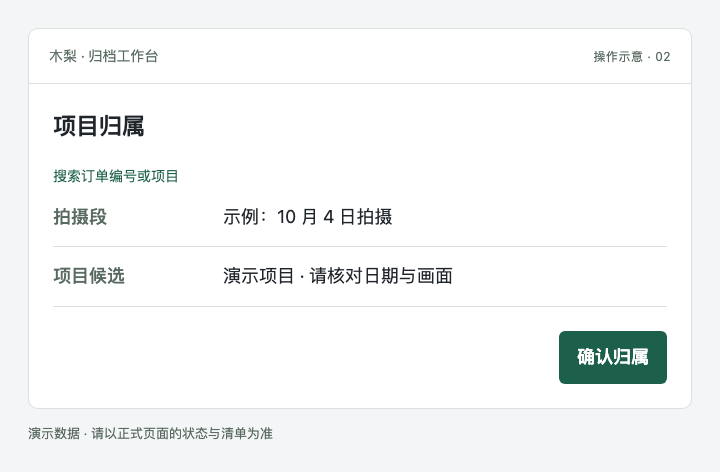
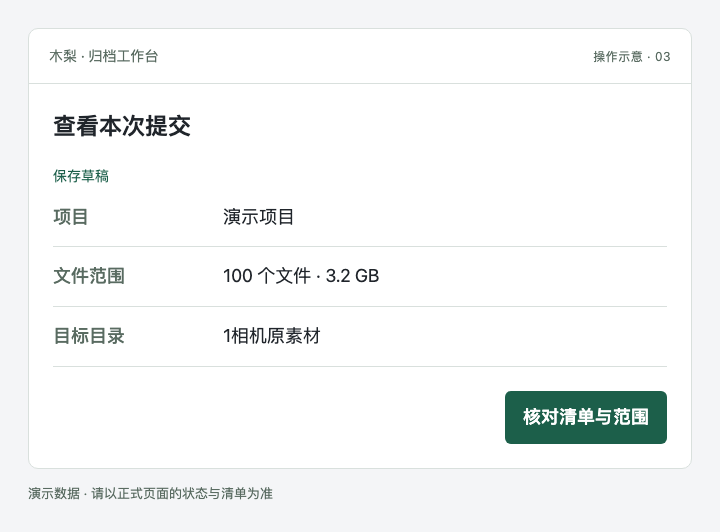
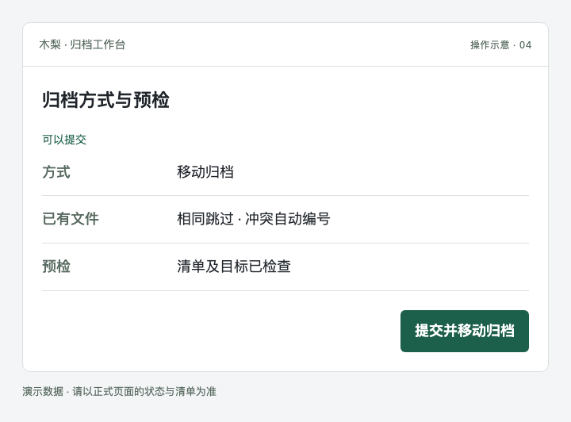
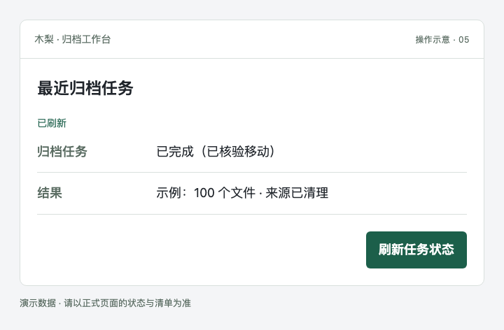
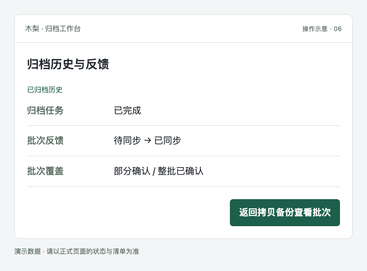

使用帮助 · 图文操作指南
先确认项目，再把素材送到对的位置。
从拷贝批次定位素材，按拍摄段确认项目，再预检、归档。已完成素材会从待处理列表隐藏，批次反馈在后台继续同步。
帮助在新标签页打开，原来的选择和任务页面仍保留。下面的配图为演示数据。
STEP 01
找到待归档素材
从拷贝系统点查看归档任务进入，或在工作台用定位拷贝批次筛选。先看报告的快照时间。
新复制的素材要先完成拷贝与校验交接。报告是快照，不是每秒扫描硬盘的实时列表。

STEP 02
确认项目归属
按拍摄日期找到对应拍摄段，在项目搜索中查订单编号或项目名。确认画面和日期后，点确认归属。
不确定的拍摄段先“暂缓处理”。同一天多个项目要分开确认；不要仅凭日期全部归在一起。

STEP 03
核对本次提交
进入查看本次提交，核对项目、目标目录、文件数量和总大小。必要时保存草稿，或先处理来源、附件的提示。
“导出归档计划（不执行）”只保存计划文件，不会移动素材。改过归属后需重新预检。

STEP 04
选择方式，等待预检
选择复制归档或移动归档及已有文件处理方式。等待预检显示可以提交，再核对提示。
复制会保留中转来源；移动会在符合条件并核对后移除来源。同卷直接移动由系统判断，不能手动跳过失败预检。

STEP 05
提交一次，查看结果
点提交并复制归档或提交并移动归档后，在最近归档任务查看阶段与结果。点刷新任务状态后，“已刷新”约 1 秒自动消失。
遇到状态暂时无法读取，先刷新任务状态，避免重复提交。部分完成或失败时先看具体错误和完成范围。

STEP 06
查看历史与批次反馈
已完成素材默认从待处理范围隐藏，可展开已归档历史查看。批次反馈会显示待同步、部分确认或整批已确认。
“归档已完成”与“反馈已同步”是两个状态。反馈后台执行；是否整批转存，以拷贝系统对应批次的有效反馈为准。

这些状态，分别是什么意思？
| 状态 | 接下来怎么做 |
|---|---|
| 等待拷贝完成 / 已阻塞 | 先处理拷贝或交接状态。 |
| 正在预检 / 可以提交 | 前者仍在检查，后者才可提交。 |
| 归档中 | 看当前阶段，不只看完成文件数。 |
| 已完成（已核验拷贝/移动） | 归档任务完成，反馈可继续后台进行。 |
| 部分完成 / 失败 / 状态待确认 | 先核对范围与原因，避免重复提交。 |
常见问题
为什么新拷贝的素材还没出现？
先在拷贝系统确认该批次完成，再看交接状态。工作台的快照可能尚未更新；出现“重新检查来源”时可点它重新读取状态。正在拷贝或未完成核验的素材不会直接放行。
页面仍在加载，能看帮助吗？
可以。顶部“使用帮助”直接打开这份静态说明，不必等待素材页面准备完成，也不会触发媒体扫描。
预检后改了项目，为什么要再检查？
归属、文件或归档方式变化后，旧预检不再对应本次计划。点“重新检查”，等新结果通过后提交。
为什么归档已完成，拷贝系统还显示后台核对中？
两个服务独立运行，反馈在后台逐批核对并同步。反馈延迟不会把已经完成的归档变成未完成；若显示“需要核对”，请查看具体提示。
可以直接点“重试失败部分”吗？
先读错误原因、已完成和未完成范围，确认来源与存储恢复后再决定。任务状态未知时先刷新，不把读取超时当失败重提。